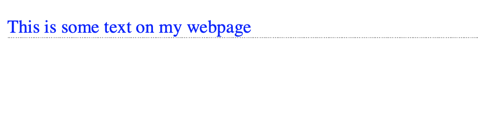
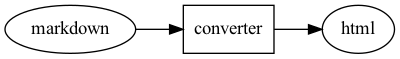
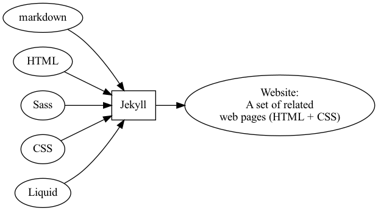

Building A Personal Website
HPC Cluster Academy
Elsa Gonsiorowski
August 2, 2022
Created: 2022-08-01 Mon 22:43
1. Schedule
| 9:00 | About Me & Setup |
| 9:20 | Crash course in HTML & CSS |
| 9:50 | Markdown & Your Resume |
| 10:20 | Static Websites |
| 10:50 | Build Your Website! |
| 11:00 | Fun |
1.1. Goals
- Set up a markdown and web development environment on your machine
- Refresh your resume
- Build a personal website
- Have fun!
Follow along: gonsie.com/talks
1.2. POLL
- Who can find the "raise hand" button on webex?
2. About Me & Setup
2.1. Elsa Gonsiorowski

- Joined LLNL / LC in 2016
- HPC I/O Specialist
- Working on SCR: Scalable Checkpoint Restart
- Excited about emacs, org-mode, static websites, fish shell, cmake, documentation, crossfit, rowing, knitting
- Personal site at gonsie.com
2.2. Connect With Me
2.3. Setup: Things You'll Need
- Resume
- Text editor with Markdown, HTML, CSS support
- GitHub account
- (optional) Package manager to install Jekyll
2.4. Text Editor Support
- Syntax highlighting, checking
- Indentation
- Export / preview support (may require additional software)
- Snippets
- Colors
2.5. Markdown
- Emacs (markdown-mode / MELPA)
- Vim (vim-markdown)
- SublimeText (packages: markdown)
- Atom (packages: markdown)
- VSCode (extensions: markdown)
- Web-based Dillinger
2.6. Activity: Setup
2.7. POLL
- What is your github username?
- Which editor are you using?
3. HTML & CSS
3.1. Computer Languages
A markup language is a system for annotating a document in a way that is syntactically distinguishable from the text.
A style sheet language, or style language, expresses the presentation of structured documents.
3.2. Computer Languages
3.3. Markup Languages

3.4. Beautiful Web Documents
- HTML + CSS
- Structure and style a document
- Understood by browsers
- HTML Elements are marked at the beginning and end with a tag
- HTML Elements have attributes which provide additional information
- CSS Selects an element and sets properties
- W3Schools is a great reference
3.5. Example
3.6. Example – Rendered

3.7. Displaying a Web page
- Parse HTML to construct DOM tree (Document Object Model)
- Render tree construction / apply CSS
- Layout the elements
- Draw the page on the screen
3.8. Activity: Make a Web page
- Edit the basic HTML + CSS pages with your editor (basic.html and basic.css right-click to download)
- "Open" the basic.html file using your browser
- Add some more HTML and/or CSS
Try adding this:
<marquee>Some text</marquee>
3.9. POLL
- Do you need to run the web server to view the page you created?
- What is the URL of your page?
- What is the most interesting tag?
4. Markdown & Your Resume
4.1. Markdown
- Designed by John Gruber (Daring Fireball)
- Defined syntax for translating text to HTML.
- A superset of HTML
- Used extensively in software communities.
4.2. Markdown to HTML

4.3. Markdown Syntax
4.4. Markdown Style Example

4.5. Markdown to HTML
Converters have their own rules.
4.6. Additional Markdown Rules
- GitHub-flavored-markdown (GFM) includes task lists and emojis.
- kramdown includes better handling of code blocks
- pandoc converts to/from any number of markup formats
4.7. Activity: Practice Markdown
Practice writing markdown syntax by re-writing your resume in markdown, using the following rules:
- Create a file
resume.md - Your name is a level 1 heading
- Sections are level 2 headings
- Different companies are level 3 headings
- Be sure to use lists and emphasis
- Additional resources: MarkdownGuide.org
4.8. POLL
- Does your editor allow you to preview the document?
- How does markdown compare to HTML?
5. Static Websites
5.1. Static vs Dynamic Websites
- Web pages with fixed content
- No backing database / dynamic server
- No way to "log in" to the site
5.2. Static Site Generators (SSGs)
5.3. Jekyll
- Defines a file structure and file format
- Built on top of markdown
- Generate HTML and CSS from source code
5.4. Jekyll

5.5. Jekyll Front Matter
- Jekyll parses markdown pages with extra front matter
- Must be on line 1 of your
.mdfile - Pass information about the page to jekyll to allow for proper rendering
- must be followed by a blank line
- Must be on line 1 of your
- Use this front matter on your
resume.mdfile:
---
layout: resume
title: "My Awesome Resume"
---
5.6. Liquid
- Templating language
- Allows hierarchical construction of a jekyll web page
- Access to variables, programming constructs
5.7. Activity: Your Resume Website
- Fork https://github.com/gonsie/jekyll-resume
- In settings: make sure GitHub Pages is turned on (from the main branch)
- Clone your repo and update the
resume.mdfile (with the front matter!) - Push your changes
- Visit your website at
<USERNAME>.github.io/jekyll-resume/resume.html
5.8. POLL
- Any issues?
- How does your resume look?
6. Building a Website
6.1. Web Conventions
https://gonsie.com https://gonsie.github.io/index.html
6.2. GitHub and GitLab Pages
- FREE websites for you and your projects
- Open source repos get free website hosting
- Github: Can automatically serve HTML or a Jekyll site (git branch hack for other SSGs)
- GitLab: Can deploy any static site using CI (examples provided)
username.github.iousername.github.io/repo- can support custom domains
6.3. Building Your Personal Brand
- How you present yourself to the world
- Username, profile image(s), profile information
- Join the blogosphere / independent web communities
- Build your own network with RSS
6.4. Personal Site Demo
6.5. Activity: Build Your Website
- Look up a domain (try namecheap or hover). How much does it cost?
- Explore different Static Site Generators
- Find a theme (most come with instructions)
- Set up a GitHub Pages or GitLab pages website
- Write an index and/or about page
- Brainstorm some blog posts
- Add an RSS feed to your site
- Use Liquid to add a list of blog posts to the homepage
- Enable HTTPS on your site
7. Fun
7.1. Have Fun
7.2. Activity: GitHub Secret
- Create a new repo called username
- Add a
README.mdfile - Visit your GitHub Profile (
github.com/username)
7.3. Activity: Show & Tell
- What did you build?
8. Credits
Created by Elsa Gonsiorowski
using Emacs, Org Mode, and RevealJS (Robot Lung theme).
View the source.